Welcome to my "War on Cancer" blog. On this page I chronicle my battle with and full recovery from stage 2 muscle-invasive bladder cancer. The story is in chronological order meaning that the latest news is at the bottom. You can simple scroll through the story or use the navigation link at the top right to jump to a specific section. The last update of this blog was on 7 May 2021.
The motivation for this blog was to inform my family and friends who are spread out over 10 time zones. Initially I sent emails to those interested but as the list grew, it became too hard to track whom I told what. A second purpose of this blog is to inform others who may one day find themselves in the same predicament.
Even though events in this blog happened in the past, most of them are described in the present tense as this was my "diary" during the journey.
Throughout my life, I've had kidney stones (about 9, lost count) and every few years I went through a very painful ordeal. As a result, I have been going to a urologist every year for regular checkups and even more frequently when stone symptoms popped up. I have not knowingly passed a stone in the last 5 years although I had symptoms on multiple occasions.
For me, kidney stone pain is either the classic sharp pain in the back, discomfort in the lower tummy or a radiating pain in my upper legs or groin. Another feature of kidney stone pain is that it could be digital; one minute there's extreme pain with vomiting, and the next it's completely gone. Most of my symptoms over the last couple of years were like that.
In 2015, I thought I had another stone (sharp pain and a little blood in my urine). X-rays were inconclusive (small stones don't always show well) but a CT scan with contrast fluid showed that I had no stones. The CT scan did however show that I had a "partially contracted bladder that is grossly unremarkable" (not making this up, this was in the report of the radiologist). As the symptoms went away, it was assumed that the stone had passed before the scan without me feeling it.
Christmas 2017 I had another episode. Back to the urologist but the outcome was the same.
With the hindsight of a Monday morning quarterback, it is likely that my bladder cancer has been around for a while but it was always misinterpreted as another stone by me and my urologists.
In November/December 2018, "the kidney stone pain" came back but this time the symptoms were a little different. The pain was the same, there was no visible blood but I had rapidly increased my daytime trips to the bathroom from 4 to about 10. Again the urologist couldn't find anything and ordered another CT scan.
Before I even had the results, I became incontinent during the night and my night time bathroom excursions went from never to about 8 times. As a result, I no longer hit deep sleep and felt like I was shooting a jet lag version of the movie Groundhog Day. It did not take long to find out that sleep deprivation is debilitating and often used as a form of torture.
The CT scan again showed no signs of stones so this time we had to look for something else.
The first guess of my urologist was a Urinary tract infection (UTI) or bacterial prostatitis. My urine contained some bacteria but not clinically significant. They put me on 6 weeks of antibiotics but the symptoms got worse. The next diagnosis was non-bacterial prostatitis. The problem with this is that it has no known cause, there is no test for it and there is no cure. This was really frustrating as control freaks like me don't deal well with the "unknown unknown". I think I'm heading for depression. Prostate cancer was ruled out as my PSA levels were extremely low and my full bloodwork was clean.
My urologist suggested that we should do a cystoscopy but recommended to wait a few weeks as my prostate was very tender. I told him I understood the possible pain but I would rather know the state of my bladder and have some pain than to deal with this debilitating uncertainty.
Well, I did that painful cystoscopy a few days later and it turned out that the inside of my bladder contained a few bumps. The first words out of my urologist's mouth were: "that's not cancer!". Apparently bladder cancer starts in the bladder liner and grows into the bladder space like a cauliflower that turns angry red and starts to bleed. This is typically how it's detected. The liner over my bladder's bumps looked the same as the rest of the liner. The doctor was puzzled as he had never seen this in over 30 years. He ordered a CT scan with contrast and recommended a biopsy just to make sure.
Getting appointments was hard at this point since waiting times were weeks to months. Luckily my urologist is the father of my daughter's Kindergarten and Elementary School friend. He has been to our house dropping off or picking up his daughter several times and as luck might have it, both of our daughters are now in the same university. He put in the extra effort and cut through the ridiculous medical bureaucracy. I got a biopsy scheduled within a week, performed by one of his urology friends (my urologist was not available as he had to go to some convention).
The biopsy however was extremely painful as they damaged my urethra. Many years ago, I had a kidney stone surgically removed and it took two four-hour sessions to get the darn thing out. They damaged my urethra badly and it caused a urethral stricture. This was never an issue for me before but during the biopsy, they couldn't get the surgical tube through my urethra and probably used a little force. Bottom line: I was in extreme pain and pied blood for days. The pain was so extreme that even opioids couldn't mask it. The most interesting thing about the biopsy was that my second urologist told me that he "did not think it was cancer"". But he had to admit he had never seen something like this either.
One week later I got the results of the CT scan. It concluded that my bladder wall was thickened. It was an "inflammation not cancerous"". The scan also confirmed that the rest of the lower body was in good shape. From the bottom of my stomach down, all organs were good and the lower lymph nodes were clean.
Your entire life you think about the medial issues you might face later in life. In my case, there is no known cancer in my family with the exception of a chain-smoking cousin. Both of my parents and two grandparents however died of diabetes related heart failure. I therefore naively assumed I did not have to worry much about cancer but should focus on heart health and watch my blood sugar.
A couple of hours before I had an appointment with my original urologist (the dad of my daughter's old friend), he was kind enough to call me and give me the bad news. This time the conclusion was a high grade, fast growing cancer consistent with traditional bladder cancer but with a non traditional development. The biopsy was reviewed by a few pathologists and they all concluded the same even though there was a hint of doubt as to the type of cancer.
I was at work sitting in my office when I got the call and I only recall the event as surreal and numbing. Strangely enough, there was also some relief as I finally knew what was going on and I could imagine a path to recovery.
My urologist offered to let this sink in first and come and see him in a few days or keep the appointment that same afternoon. I kept the appointment and after telling my wife the results in person (an emotional moment I dreaded all the way home), we both went to see him.
The recommendation from my urologist was to remove the bladder, prostate, seminal vesicle and lower lymph nodes (called a radical cystectomy and to sweep up remaining cancer cells with chemo afterwards. He did not perform this procedure himself but the urology group (about 30 doctors) had a few people who did.
My basic options were a) go with experience and use a doctor who has done a lot of them but does it by hand or b) go with a young whiz kid who has only done them using the Da Vince robot but might lack experience. I decided to be a rebel and go young. I already figured out this was a fast moving field and I wanted somebody who still had two legs in the academic world and could go robotic. The Da Vince procedure for removal and reconstruction was developed at Johns Hopkins Hospital in Baltimore, MD and having someone from the joystick generation operating the machine appealed to me. The robot is far more accurate, reduces recovery time and minimizes side effects.
BTW: in this blog, the terms "whiz kid" and "joystick generation" are terms of endearment and respect. As an older person who lived his live pursuing innovations, I have the deepest respect for those who continue to pursue state of the art developments. In the end, I picked the right team and I will forever see them as heroes.
As luck might have it, I was already scheduled for a colonoscopy. This was now very important to me as a part of my intestines could be used as a replacement for my bladder. Obviously, the colon is a "long way" away from the part that would be used as a replacement but I have a few colleagues whose colon cancer ended up in removal of all intestines. I wanted to make sure there was no cancer in those regions.
Initially my gastroenterologist wanted to wait for the result of the scan and biopsy and canceled my appointment. With charm and persistence, I got a quick appointment with a Registered Nurse (RN) at the same office and she got my an urgent colonoscopy within days. Again the bureaucracy was ridiculous as the scheduler said the next appointment was in 6 weeks. When the RN put the cancer word on the table, I got an appointment in 2 days.
During previous colonoscopies, pre-cancerous polyps were found/removed and I was on a 3 year schedule. This time, only 2 small bumps were removed. They were also pre-cancerous and the doctor put me on the 5 year program. I saw this as good news as nothing was in the way of getting a "neo bladder" made from my intestines.
Since I'm now pushing the medical system to the brink, I had an appointment with my young urologist on the same day as my colonoscopy. I fully expected that we would make a plan for removal, reconstruction and chemo but my doctor had other plans.
His first point was that this is war and in war you have to know your enemy (this is what I heard, not necessarily what he said). He was not convinced we knew enough about the cancer yet as my cancer did not start in a traditional way, the pathology was not 100% conclusive and during the first biopsy they did not get samples from my bladder's muscle (this is important to determine if we are dealing with stage 1 or 2).
He recommended a second, deeper biopsy and sent the specimens to high frequency labs where they see more cases like this. The second military point was that in war, you have to know your own abilities, and he wanted to know more about me. He ordered an upper body CT scan with contrast to ensure we did not miss anything and to ensure my heart and lungs were healthy enough for aggressive treatment.
The average age of a bladder cancer patient is in their early 70s and often these people have other complications and they have to balance treatment with conditions like diabetes, heart problems or high blood pressure. The upper body scan came back clean so for now, I know my cancer is limited to my bladder.
My second biopsy was one for the ages. Not only did the surgeon have the same stricture problem as the first one, he also decided to scrape away most of the cancer cells from my bladder wall. We don't know why he did that but from the beginning he had stated that if possible, he would like to save my bladder. I assume his thinking was that since he's causing all this pain anyway, he might as well remove the cancer to give him more treatment options.
After surgery, he talked to my wife but wisely stayed away from me as I might have hurt him. For two days the pain was so bad that if someone had offered a medical coma, I would have taken it. There was significant bleeding but I guess that was to be expected. Luckily, I'm still in decent shape and my body recovered quickly. I stopped taking opioids after a few days and my urine was almost running clear in a week (it's amazing how fast our body can heal itself). Like the first biopsy, I had a catheter for one week to make it heal faster.
My urologist was nice enough to call me with the biopsy results and not]let me wait until the appointment one week later. The second biopsy confirmed the results of the first one. I have high grade bladder cancer and this time they confirmed it did spread to the bladder muscle. This means I have stage 2 cancer and his recommended procedure is chemo followed by bladder removal/reconstruction. This is the reverse sequence of what the first two urologist recommended, but a simple Google search confirmed that the younger generation was right as that is today's thinking based on solid academic research.
My urologist also made an appointment with an oncologist within a few days and I would start 4 rounds of chemo shortly thereafter. My big robot surgery will be sometime in July/August. Recovery from that surgery will be 8 weeks.
Since I was already prepared for this after the first biopsy, I'm OK with this approach. All the uncertainty from the first biopsy is now removed and the war on cancer can now start for real. I'm definitely liking the idea of chemo first since it will catch any cancer cells that might have escaped from my bladder.
The last 10 days have been extremely painful. First the bladder biopsy surgery where an area of 2 by 4 inches was scraped away and later the catheter that made it impossible to sit, stand or do anything without pain. Once the catheter was removed I became more mobile even though the pain is not yet gone. Getting good sleep is still hard but I do feel a small improvement every day.
I was too optimistic about the fast recovery from the second biopsy. The last couple of days have been very painful and I'm back on opioids. I was told this could happen but I assumed it would not happen to me. I was wrong (again).
I had my first meeting with the oncologist and I now have a treatment plan for my chemo. Apparently there are two different treatments for my cancer. The better version is more aggressive and is only tolerated by one in twenty patients. So, as one of the younger victims, I've been nominated for best of class treatment and will undergo MVAC chemotherapy. The letters in this acronym stand for four different chemical with impossible names. I've decided it stands for "My Very Aggressive Chemo".
MVAC is administered in two steps. I'll get M on Thursday during a one hour session, and VAC on Friday during a five hour session (yes, five hours of chemical warfare). This process is repeated four times every two weeks. The only exception will be the last round. It will be delayed by another week so I can attend my son's college graduation ceremony.
So the good news is that everything will go faster than expected and the outcome will be better. The disadvantage is that it will be more miserable. It also means that my bladder removal and reconstruction surgery will also be sooner than expected.
Apparently Mr. Murphy is never far away. About 10 days before my first round of chemo, I started to have pain in my urinary tract. Initially this was dull but it became so bad that I cold no longer sit or lay down without major discomfort. To make matters worse, my wife and I had planned a trip to see our kids (who are in college) before chemo starts, and although it was great to see them, the pain was dominating the whole trip.
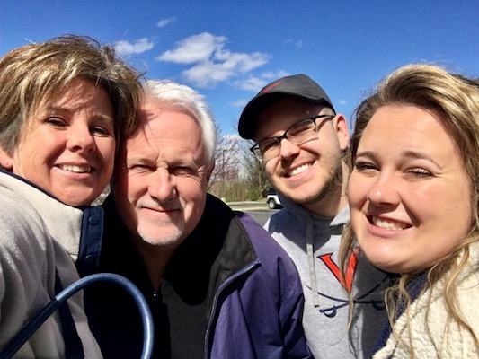
On the way back home, I noticed that my urine was also very cloudy which made me believe I had an infection. Quickly playing Dr Google confirmed that all my symptoms lined up with a UTI. Given that I still had antibiotics left from that long "none prostatitis treatment", I decided to self medicate (kids listen to me, never do this at home). With long chemo sessions around the corner, it was important that I could sit without discomfort so I decided to see the urologist or a RN.
Sure enough they found a "mixed fauna" in my urine but not enough to conclude it was a UTI. Luckily, the RN did prescribe more antibiotics and the pain stopped just in time for chemo round one. I clearly dodged that bullet even though they did not think it was a UTI. Obviously I did not tell them about the self medication.
Last week, I had to complete three things before I started my chemo. Firstly I had to get a PICC line installed. This is a permanent port they use to draw blood and inject the chemicals. The line starts in your arm and ends just before your heart so the chemicals are immediately dispersed through your entire body. The other advantage is that they don't have to poke you every time. It will stay there for 8 weeks.
The second thing was a 45 minute heart echo. My CT scan and EKG had shown that my heart was good, but the oncologist wanted to make sure it could handle the nasty stuff. I passed that test with flying colors and the nurse even joked that I could make money on the side modeling my heart.
The last bit was the chemo training. This was very useful as a nurse explained the process, the chemicals, and the do's and don'ts. So to my surprise, I'm not just doing the 1 in 20 MVAC, I'm doing the accelerated or "dose dense" version. Normal MVAC is every 4 weeks, the accelerated version is every 2 weeks (lucky me). The sales pitch is that your body has less side affects if you do it faster (don't ask me about that logic).
So right after the chemo training I entered the chemical warfare room and got my M chemical. Not a big event as it was over in 30 minutes with no side effects. On Friday however, I did my VAC chemicals which was advertised as 5 hours. Just like any good airline, we had some delays and the entire journey took 6 hours and 45 minutes.
The amount of stuff they put in me was ridiculous (it must have been over 3 liters). First saline to hydrate me, then anti-nausea medication followed by a bag full of steroids. Finally it was time for the V chemical. At this point, three nurses showed up with a box full of bags (everything I needed for the rest of the treatment) and they spent 5 minutes checking serial numbers, quantities, expiration dates and matches with my wristband. Given that this stuff is nasty and dangerous, I had to appreciate their attention to detail but at one point, I could not help myself and feel like a prisoner on death-row.
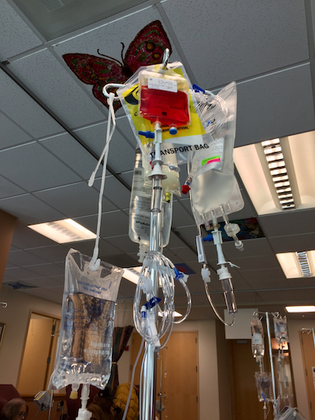
The A and C chemicals are really bad apparently as my kidneys had to be flushed with 1 liter of saline after the A and half a liter of the C to avoid damage. So after almost 7 hours I left the place and although I was tired of sitting, I did not feel any different.
All of this changed on Saturday when my energy level went down very quickly. By the time Sunday came around, I was hitting a wall and was sleeping most of the time. Monday morning I started to feel better although the progress was very slow.
The best way to describe the treatment so far is to be hit by the worst flu ever but without the fever. Every muscle and joint aches, you have a slight headache, no energy or appetite and you sleep a lot. Nausea was minimal but the additional pills they gave me, controlled it nicely. The biggest issue I have right now is that I can't concentrate. A five minute conversation knocks me out.
So overall as the optimist, I can't complain too much as many people have far worse symptoms. I know I still have three sessions to go and think it will still get worse. Nevertheless, I still feel good about the outcome. I did not pick this fight but I will win this war.
Recovery from the first round of chemo has been a rollercoaster. Four days after the chemo session I started to feel better, but good and bad days would alternate for another 4 days. It wasn't until one week after the chemo that I really improved and was eating well again. Actually, I was eating so well that I even gained weight.
We were told that I would most likely not lose all my hair but that it would thin out. This did exactly happen during the first round of chemo. When I washed my hair, little bits came out but not much. The other noticeable thing is that my hair is getting thinner and softer, and my facial hair has decided to slowdown growth. Less shaving for me for a while.
One day before the second round, I had to do blood work to see how my body recovered from the first round. I passed that test with flying colors, so I'm ready for round two.
The other good news was that I could move my chemo treatments to 8 o'clock in the morning, right as the office opened. The good part about this is that the doctors don't start working until 9 o'clock so the waiting rooms are empty. I think I was patient number three so from the moment I got into the building, I was hooked up to my lovely concoctions within 10 minutes. The entire process took less than 5 hours which was a vast improvement over the 6 hours and 45 minutes of the first round. I've scheduled rounds three and four at 8 o'clock as well.
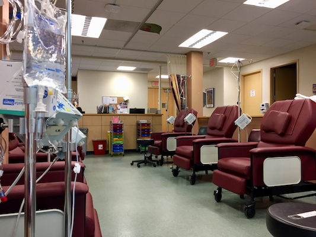
Round two was different from round one. This time there was no honeymoon period as my body immediately recognized what was happening and even on the Friday a few hours after the treatment, I already started to go down.
Tiredness, muscle and joint aches, lack of concentration and that general flu sensation were the same. What was different was the nausea and I was not able to control it with medication on Sunday or Monday. Luckily, Tuesday morning things turned around and I started to feel a little better. In under 3 days I lost 5 pounds and a lot of hair.
Hopefully I can strengthen over the next 10 days so I'll be ready for round 3.
Round two has been different than round one. This time there was no rollercoaster but the intensity was greater in terms of tiredness and nausea. One week after the chemo, I can clearly feel my strength coming back and I have yet again some color in my face. I assume my white blood cell, red blood cells and platelets are making a strong comeback.
The biggest difference however has been my hair as I started to lose it rapidly leading me to take drastic hairstyle measures. Funny enough, it only affects hair on top of my head and the rest of my body is (still) normal.
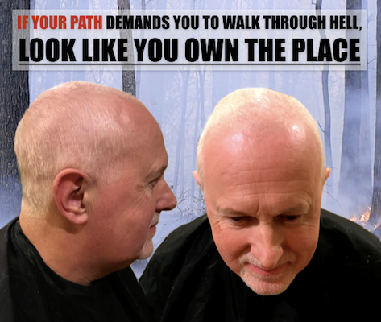
As I mentioned earlier, I had a PICC line installed in my upper left arm. This line is nothing more than a small tube that enters my upper arm and runs to my heart so that the dangerous chemicals can be distributed quickly through my entire body instead of lingering near an entry point where they could potentially damage tissue. The only thing that sticks out of my body is a small tube with a port on it that they connect to an infusion line when required.
Every week on Wednesday, the entry area has to be disinfected and they put a very sticky antibacterial gel and a see-through cover on it so the entry wound can be monitored easily. White mash netting that looks like a bandage is put over the whole thing to hold the dangling port in place. As I don't feel or notice it much, I got into the bad habit of not checking the entry wound every day.
Today as I took a late shower, I noticed a lot of blood around the wound covering the entire area of the clear bandage. This spooked me a little and had to seek help immediately. With my luck, it was now Saturday evening and the only option was an Emergency Room (ER). Luckily it was early in the evening so the ER was still quiet. The crazies, the intoxicated and the gunshot victims would likely arrive much later.
After being checked by multiple doctors and nurses, they concluded that the clip on my arm that holds the line in place was not mounted properly during Wednesday's cleaning and caused the line to move a little and start the bleeding. Remedy was simple: take all the stuff off, clean it well and reapply new disinfectant gel and cover it back up.
Well, that was easier said than done as the ER did not have the kits to treat PICC lines available and none of the nurses had actually done it. Problem one was easy to solve. The infusion center that cleans my PICC line is literally next door to the ER and it's operated by the same organization. Problem was that it's locked. Luckily an American ER has security guards on duty to deal with out of control patients and I was able to convince the nurse to convince the guard to break into the infusion center and get the right supplies.
The second problem was more interesting. The nurse who did the cleaning had only seen a PICC line in training many years ago and wasn't too comfortable. As I witnessed 5 cleaning sessions already, I was able to coach her through the process and get all the right bits in the right place while keeping everything sterile. Lesson learned: always look at medical procedures performed on you. You never know who you might have to coach through the process.
After I posted my new "badass" hairstyle on the blog, I got a lot of very nice reactions that, for a bit, drew attention away from my war on cancer.
The first good reaction came from a dear friend in California. She noted that I totally ROCKED the new style and that I looked like a badass MARINE or NAVY SEAL. Luckily her husband stepped in quickly and put the word (RETIRED) in that sentence followed by another friend pointing out that I might look like a Navy Seal but not the one that's on trial for war crimes. Thank goodness for that clarification.
My family in the Netherlands had a different view as they compared me to rock stars like Peter Gabriel and Billy Joel. If you read the "about me block" at the end of this blog, you quickly realize how fitting that was.
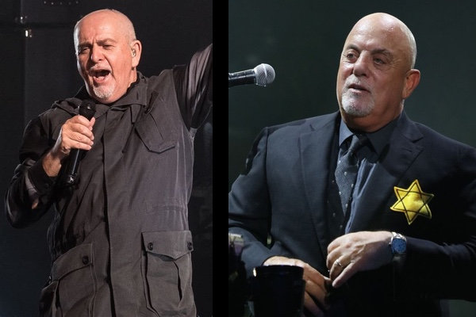
My own children, who used to binge watch Breaking Bad on Netflix, saw a resemblance with the lead character Heisenberg (but without the meth lab off course). As a result, I'm no longer a "badass" but rather a "Breaking Bad ass". This inspired my wife to take the appropriate pictures.
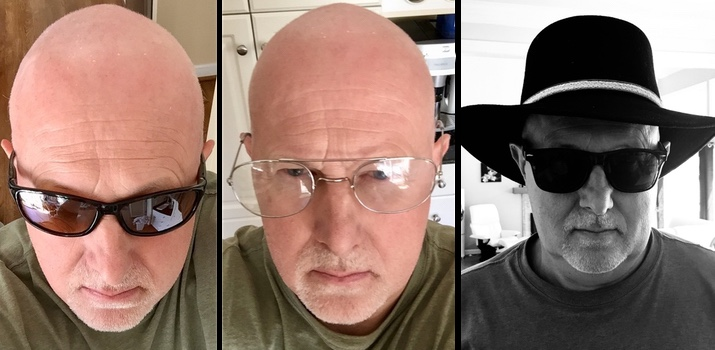
So in a few simple days I went from just another guy with cancer, to a badass (retired) Navy Seal (that did not commit war crimes), to an aging rocker, to a Breaking Bad Ass. Not a bad three day transformation.
From the beginning, I was told that successive treatments would be worse in terms of side effects. I my case, this is definitely true as I hit deeper lows that also lasted longer. In order for this blog to be useful to future patients, I'll give a day by day summary of my round 3 journey so other people can benefit form it later.
I'm not having much luck with my PICC line. Yesterday was my weekly PICC line cleaning and while taking a shower just before I went to the Infusion Center, I noticed that my left arm was swollen and discolored. The entire arm was more red with a purplish hint. Clearly this was not a good sign and on top of it, the area around the PICC line entry wound looked more red than before.
The nurse at the Infusion Center was very good and took action immediately. She got the opinion of a few other nurses and then decide to call my oncologist directly. Collectively they decided that there was a risk of an infection or even blood clots. My oncologist told the nurse that he would order an ultrasound of my arm and some other tests to see what the problem was. I should be contacted within 24 hours. The nurse did clean the area just in case and put on a clean bandage.
As I mentioned before, I've been very happy so far with the medical treatment but the administrative side remains an abomination. As expected (and even predicted by my good nurse), I never got a call so I had to become proactive again. As usual, it was hard to get passed the automated telephone system and the unpleasant pitbull operators but I managed to get in touch with a scheduling secretary as well as a triage nurse. True to form, the secretary was useless and even rude while the nurse was helpful and saw the potential dangers. I had an appointment within 2 hours.
Medical staff quickly took my vitals and ruled out an infection due to the normal temperature and other vital signs. The ultrasound of my left arm did however show that I had two blood clots. One in my upper arm and one in my armpit. Unfortunately, Thursday is the day off for my oncologist but the nurses tracked him down somewhere on a golf course and got his guidance. These nurses are saints and if the administrative staff was half as human as them, the world would be a better place.
The doctor's recommendation was not to panic, put me on blood thinners for 3 months and monitor closely. "3 months", I asked? I never got a good answer but I suspect the pharmaceutical industry is behind it as this new drug that I was given is expensive. They gave me 30 days free (a $950.00 value) so they clearly have to recoup their "generosity" in the following months. Who knows what the second and third month will cost? Good news for me is that my bladder removal and reconstruction is within this time window and they clearly don't want you to be on blood thinners during 9 hours of internal surgery. Hopefully, these blood clots don't mess up my schedule as it's starting to look like I spent more time on side effects of side effects rather than dealing with the real problem. It would be highly ironic if you die from a side-effect's side effect when trying to save your life from an aggressive cancer.
The one remaining issue was the red area around the PICC line. Given that there is a three week window between chemo rounds 3 and 4 (due to my son's university graduation), I was in no mood for more risks. Imagine another complication on graduation day? No, thank you. I therefore convinced the nurses to remove the PICC line and accept having to get a new one installed just before chemo round 4. The nurses thought this was a great plan but needed approval from the oncologist. His golf game got interrupted again and he agreed.
Update (3 days later): The PICC line removal was simple and painless. I did have some bruising for a few days but that was to be expected as they use serious pressure to stop the bleeding. The entry wound is healing quickly and the redness is almost gone.
Well, I concluded too quickly that I was done with side effects. The medication prescribed to treat my blood clots caused my bladder to bleed again. Because of all my kidney stones, I had learned that it doesn't take much blood to make it visible in your urine. My urine however wasn't just tinted red, it was red and looked like pure blood (a slight dramatization).
So here comes "Deja Vu all over again". I first called the urologist and was once again greeted by an automated telephone system and unpleasant pitbull operators. They told me it was not possible to just walk in and I would get a callback from a nurse. My second course of action was to call the oncologist and with a little extra drama in my voice, I was able to talk to the triage nurse and was asked to come in immediately.
As always, the oncology medical staff was efficient and very helpful. Not only did they think that the bleeding was exacerbated by the blood thinners, they actually suspected a Urinary Tract Infection (UTI) as my white blood cell count was very high. I was again put on antibiotics and they reduced the blood thinner dose. Within 4 days the bleeding stopped and the discomfort went away. Later the oncology staff confirmed that I had a UTI based on a urine culture test.
Eventually, 3 days after my first call, I got a callback from a urology nurse. I was not amused and let her have it over the phone. How come I had to go to an oncologist with a urology problem? Why did I almost go to an emergency room to have a doctor there call the urologist and get his attention? The nurse was shocked by the treatment I received from the admin staff and told me that in case of emergency (and bleeding is clearly one of them), I should always come to the office and would be helped immediately. Apparently the admin staff has quite a reputation and the nurse promised me she would raise this issue (again) with the office manager. I thanked her for her effort but told her that I would not be holding my breath.
When I started chemotherapy, I knew that my son's college graduation would be somewhere in the middle of it. Luckily my oncologist understood the importance of that day and scheduled the chemo in such a way that on graduation day, I would be the best I could be. This is the reason why there was a three week break between chemo rounds 3 and 4 as compared to the usual 2 weeks called for by the dose dense MVAC protocol.
Graduation day was two weeks after round three and I felt pretty good. Our San Diego friends (who are our son's godparents) also came and we had a great weekend together. I was able to participate in all activities and enjoyed all of them. Having your first child graduate from college is a big deal and we were very proud of our son who graduated with a double Bachelor's Degree in Communications and Film.
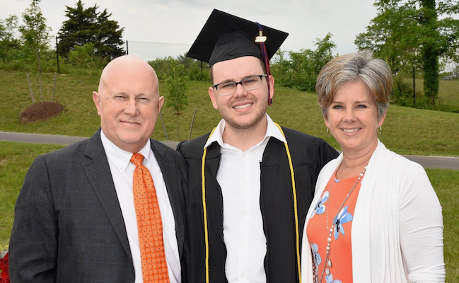
Because of the severity of round three, I must admit that prior to the graduation, my mental state had taken a beating. The hopeless optimism that I had at the beginning of chemo wasn't as strong anymore which really bothered me during this special weekend. Having had kids in my late 30s, I recognized that many key family milestones were still to come like our daughter's graduation, marriages and possibly grandchildren. I assume every cancer patient has these moments where thoughts about future ambitions and mortality cross paths. What if I'm not around for those special moments? How would the family handle my absence? What will their lives look like?
I quickly realized that this line of reasoning causes a downward spiral into anxiety and depression. Luckily I was reminded of a former boss and his words of wisdom. General James Mattis is probably one of the most remarkable people I've ever met. He is a tough as nails Marine with an exceptional intellect and memory (don't play trivial pursuit with him) and an unbelievable sense of compassion. I decided to borrow one of his famous quotes and give it a twist in an open letter to "cancer". It definitely stopped my mental death spiral in its tracks and I'm now more ready for the fourth and final round of chemo.
Dear Cancer,
I've come in peace without an army as I simply want you to leave my
body. But I'm pleading with you, with tears in my eye: If you keep
fucking with me, I'll have to kill you all.
Johan
After three rounds of chemo, my urologist wanted to look at my bladder to see how the treatment was progressing by performing a cystoscopy. Well, this did not work as planned. I already mentioned earlier that I have scar tissue in my urethra (called a urethral stricture) from kidney stone removal surgery in the early 90s. As it turns out, I now have another stricture caused by the second biopsy and bladder resection surgery. I don't notice this when going to the bathroom but this one is so bad that the urologist could not get the scope into my bladder. Given that it is the same guy that caused the problem, he wisely decided not to force it and avoid unnecessary torture. He will now use the upcoming CT scan with contrast fluid to determine the effectiveness of the chemo treatment.
I was obviously OK with not doing the cystoscopy but the new stricture might have an effect on my bladder reconstruction surgery. Depending on how narrow my urethra has become, a neobladder might not be the best option as I might not be able to push the urine out with my belly muscles. This would be a setback but a final decision is not required until late June. More stuff to worry about next month.
To go through chemo round four, a new PICC line had to be installed as two of the four chemicals are too toxic to put straight into a vain. Given how easy it was to install the first PICC line, I thought it would be a piece of cake to install version 2.0. Well, I was greatly mistaken.
A PICC line is inserted into your upper arm and runs to near your heart so the chemicals can be dispersed to your entire body quickly. Clearly this is a risky process as you might infect your bloodstream or damage major arteries. As a result, the procedure is performed in an Operating Room (OR) under sterile conditions. The anesthetic (novocaine, the same stuff used by a dentist) is applied locally on your arm and you can follow the whole process as you are awake. The OR is equipped with two tools. Firstly, an ultrasound machine to see where the arteries run in your upper arm and to ensure the needle hits them. Secondly, a live low-dose x-ray machine to see how far the guide wire is from your heart, allowing staff to cut the PICC line to perfect length.
So for my first PICC line, I went to the hospital where I was greeted by a very large male nurse who took me to the OR and got me ready. He was very kind and soft-spoken but did not waste any words. Within 5 minutes, two additional male nurses arrived. This was "straight-from-a-horror-movie" scary as the two individuals were also very large, unshaven and they looked like they just escaped from Alcatraz. These two did not waste any words either and went straight to work. The team was all business and the whole process took than less than 10 minutes. Before I knew it, I was on my way home. No pain, no discomfort, just a tube sticking out of my arm.
The second PICC line was installed at a different hospital. This time there were no scary men in sight and the prep area as well as the OR were overstaffed with very friendly female nurses. They took almost an hour to get me ready and finally wheeled me into the OR. At that point I should have known this was not going to be the same as the first experience as the nurses (all five of them) where constantly talking about their private lives. As a patient, you can see the ultrasound and x-ray machines (if you care to look at it) and I quickly noticed that the first attempt with that large needle did not hit the vain. Neither did the second but these failures were covered up by all the private smalltalk. During attempts three and four, they decided to poke around a little which really hurt. Novocaine was added about 5 times. After four botched attempts, I pointed out that the team that successfully did the first PICC line used a different vain (just look at the scar on my other arm). Begrudgingly they accepted my point and successfully installed the new PICC line on the fifth attempt.
Below is a picture showing the immediate aftermath with a PICC line on top of my arm and the "near misses" on the side of my arm. This entire area turned purple and black for almost two weeks. Next time, I'll try to find the escapees from Alcatraz again.
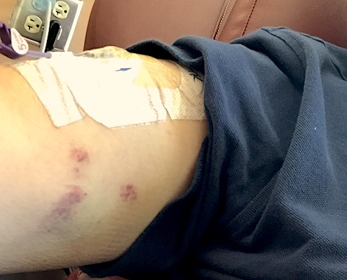
Hallelujah, we're there! Here comes the last round of chemotherapy. As expected, the cumulative effect of multiple rounds of poison was noticeable especially in the tiredness department. The progression of round four was about the same as round three (which I chronicled in detail below) but I got a lot more tired than before.
The big difference with the other rounds was nausea. In rounds two and three I suffered from "traditional nausea" with classic symptoms such as an upset stomach, queasiness, faintness, dry mouth and diarrhea. All of this was controllable with medication and looking back at it, it was manageable.
The new thing in round four was what I would call "mental nausea". For no good reason, thinking about chemotherapy, smelling something that reminded me of chemotherapy or seeing an object that I associated with chemotherapy caused an immediate and violent reaction. Within minutes, I would throw up followed by at least another ten or twenty gag reflexes to the point that my entire body would hurt.
The first time this happened was two days before round four. I was about to go to bed and was cleaning my contact lenses. All of a sudden, I had to think about the upcoming round four and within minutes, I got very sick and started to vomit. The second time it happened was in the oncologists office where it's very hard not to think about chemotherapy. In total it happened about five times and all episodes were equally dramatic. It wasn't until two weeks after round four that it stopped.
When I got physically stronger, it allowed me to become mentally stronger and have better control over these negative effects. The other thing that might have helped is a change in mindset. When I started chemo, I took the advice to listen to my body which served me well. When the mental nausea got really bad, I decided to reverse this logic. I was done with chemo and to heal faster, I thought it to be better for my body to listen to me. It actually worked as I recovered faster and the mental nausea went away.
I guess the entire episode proves that the brain is a powerful organ. It was capable of making me physically ill based on a simple thought but it was also capable of accelerating my healing based on positive willpower. I guess the big lesson learned here is that I should have worked more on mental health when going through chemotherapy. I need to keep this in mind for the upcoming surgery.
Ten days after chemo round four was my 59th birthday. As this was not the best time to celebrate, I decided to officially move my birthday to June 16th (Father's Day). This gave my children a two for one deal and I would have more time to recover from chemo and enjoy the moment a lot more.
It did however not stop my family from having a small celebration and find clever ways to cover up my very large head-covering bald spot.
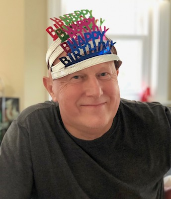
In order to see if the chemotherapy did its job, the oncologist had ordered a CT scan with two types of contrast. Firstly, I had to drink two pints of banana-flavored barium sulfate before going to the imaging center and secondly, they gave me more intravenous contrast fluid at the center. As you might imagine, drinking the barium sulfate did no go very well and I had another episode of mental nausea. I never told the medical staff that half the stuff came back out and luckily nobody yelled at me. I guess I had enough nuclear waste in me to take beautiful pictures.
My oncologist was very happy with the scan results. The cancer did not spread to other parts of the body and the bladder area was almost clear of cancer cells. Given that the bladder will be removed anyway, all of this was good news and he believed the treatment had achieved the intended goals.
The oncologist turned me back over to my urologist who will perform the bladder removal and reconstruction surgery. I will have to go back to the oncologist in September to see if the blood clots caused by the first PICC line are still there. If they have "dissolved", I can stop taking the blood thinners. If not, I guess I'll be on my way to a cardiologist.
Three weeks after the last chemotherapy it was time to properly celebrate my birthday and Fathers Day. As this was the longest period without chemo treatment so far, I could definitely feel the difference. By getting physically and mentally stronger, I was able to enjoy the day and I even started to properly taste food and drinks again. It was a good day and I even treated myself to a beer. After being sober for a couple of months, I could definitely feel the "cheap date" effect.
Throughout this blog, I've hinted at the effect chemo has on the digestive tract. Now that my aggressive MVAC chemo is over, let me describe the complete experience. Cancer cells are fast growing and chemo is designed to attack them. Other healthy fast growing cells in your body also become victims during chemo and my digestive tract was affected significantly.
Starting with my mouth. Once I started chemo, the mucous lining of my mouth was impacted immediately and it started to turn over rapidly. For over two months, my mouth felt like it was recovering from a mouth burn and I constantly had that slimy coating everywhere. Luckily I never developed mouth sores which are very common in chemo patients. My tongue saw the biggest effect as my sense of taste changed rapidly. For the first time in my life I started to enjoy (American) sweets as my ability to taste sugar was severely reduced. Bitter and sour flavors were enhanced while salt was harder to taste. As a result, many food items just did not taste right. This was not a constant as it changed during the chemo, driving me mad as the things I liked one week might not be so good the following week. On top of that, I think it was the constant metallic taste in my mouth that affected me the most.
The mucous in my esophagus was also effected but it did not bother me until the end of chemo. On more than one occasion, medication would get stuck and I would have to eat solid foods afterwards to "push" the pills down. In the end this was not such a big deal as I just started to take my medication before meals.
My stomach was clearly affected the most. Before chemo, I occasionally suffered from indigestion and acid reflux but chemo made this a lot worse. Luckily, over the counter antacids and acid reflux medication worked well, so this was also controllable. The biggest issue was the nausea that I already mentioned. Especially towards the end of the chemo treatment, feeling sick to my stomach and vomiting started to happen more often. The prescribed anti nausea medication helped a little but it could not completely bring it under control.
My intestines were the most unpredictable during the process. For no reason I ever discovered, I would go from normal to constipated to diarrhea a few times a week without a noticeable pattern. Although annoying, it was manageable as long as I didn't make any assumptions.
The last thing to mention is that the entire digestive tract became very sensitive to spices. As a person who loves spicy oriental foods, it was interesting to see that within one week of starting chemo, I had to classify black pepper (yes, black pepper) as too spicy for me to handle.
All in all, it wasn't until about six to eight weeks after the final round of chemo that all the symptoms mentioned above went away.
When I found out that my bladder cancer was at stage 2, I knew that my bladder had to be removed and some form of reconstruction/urinary diversion had to take place. Earlier in this blog I mentioned that I quickly came to the conclusion that I wanted a replacement bladder called a neobladder made out of a part of my intestines. This was a very comfortable notion as it gave my the sensation that my future life wasn't much different from my previous life.
Given that a hard decision was not required until now, I really didn't think about it much until a few weeks ago when I seriously looked at the pros and cons of the three possible options. Guess what; the decision wasn't as easy as I thought, and in the end, I decided to do the exact opposite of what I thought I would do.
The reason for this flip/flop is actually pretty simple. Initially, I only looked at the perceived pros of the solutions and did not factor in the cons nor possible risks. This created an unbalanced perspective that made me draw the wrong conclusions. On the other hand, believing this unrealistic future served me well during the last couple of months as it never weighed on me during those terrible chemo cycles.
So now it was time to come back to planet earth and look at the whole situation realistically. For those who care, here is my thought process:
Option 1 is the neobladder, where a segment of small bowel is used to create a reservoir for urine. The ureters (tubes that connect the kidneys to the bladder) are attached to the reservoir which is ultimately attached to the urethra (tube that takes urine from your bladder to the outside). You use the neobladder to store urine and you urinate either with the help of a catheter or by bearing down to push the urine out with abdominal pressure.
Initially this sounded appealing to me as you simply had to learn to use different muscles to urinate. Almost business as usual. Well, it's not that simple. The neobladder has no nerves in it so you have no idea how full it is. You therefore have to urinate on the clock every three to four hours, day and night. Initially this has to be done through self-catheterization as you still need to learn the proper muscle technique. Given the scar tissue in my urethra caused by previous surgeries, this could be painful and difficult. You might even have to self-catheterize for the rest of your life if your neobladder doesn't empty properly. Finally, there is a risk of lifetime leakage requiring you to wear diapers.
Adding all of this up, the neobladder is not as appealing as I initially thought. Sticking something up my penis at least six times a day with a risk of infection, dealing with my scar tissue, living on a four hour clock with sleep deprivation and still face the risk of having to wear a diaper did not sound like business as usual, and I quickly lost interest in this solution.
Option 2 is the Indiana pouch where a part of the colon is used to store the urine on the inside of your body. This pouch has a channel brought out to the skin somewhere in the belly area that must be catheterized to empty the reservoir.
This option is similar to the neobladder but has the advantage that you don't catheterize through the penis. It does however have the same disadvantage that you have to live on the clock and it has similar infection risks.
Option 3 is the ileal conduit where a short segment of bowel is isolated with one end attached to the ureters and the other end brought through a small opening, or stoma, in the abdominal wall. You then have a pouch on the outside that collects the urine as it drains out of the stoma.
Initially I was dead set against this option as it was obviously going to change my appearance and I thought this option would require the most work. It turned out I did not inform myself properly and the medical urostomy ecosystem is offering some very clever and practical solutions that simplify this option.
First of all, a urostomy pouch is very flat and unless you wear very skinny cloths, people are not going to see it. You can even swim with it and most swimwear (no, not a speedo) will cover the bag. Secondly, a urostomy bag needs to be replaced every two to four days which is not a great burden. Determining whether the bag is full is easy as it is on the outside of your body and emptying it is as simple as opening and closing a valve. Thirdly, you can cascade the pouch on your belly to a bigger bag so you don't even have to get up during the night. For long road trips or visits to the Munich Oktoberfest, you can cascade to a leg bag. The other 50-plussers will be impressed that you only have to go to the bathroom once for every five or more of their trips. Lastly, you never have to catheterize yourself and the risks of infections is significantly reduced.
So once I got over the stigma of a pouch on my belly, and used quality of life to judge the pros and cons of the three options, it quickly became clear to me that the ileal conduit with urostomy pouch would be my best solution.
Today, I had my Pre-op meeting with my bladder removal surgeon. I discussed my reconstruction decision making with him to see if I covered all the angles. I think he was impressed that I had done so much research and confirmed all my findings. So now it's final: I'm going with option 3, an ileal conduit with urostomy pouch as a way of dealing with urine for the rest of my life.
My surgeon also confirmed that he had solicited the help of a colleague to help him during the long procedure estimated to take between six and eight hours. The second surgeon is also in his early thirties, trained on the Da Vinci robotic system, specializes in urological oncology and the two have done many of these procedures together. I felt very comfortable being in the hands of this team.
Everything is a "go" now and I still have one month to strengthen, overthink the procedure and if really necessary, get nervous about it.
With less than two weeks to go until the big surgery, I'm having a lot of discomfort urinating again. True to form, I got another Urinary Tract Infection (UTI) for which I have to take antibiotics. On one side, it is miserable to go through this again but on the other side, it confirms that my current urinary plumbing is simply not good anymore.
My entire day is now focussed on (preventative) bathroom trips as I have little time to go to the bathroom when the urge comes. The is especially hard when you're about town and you're going from the Virgina heat into over air-conditioned spaces and back. This UTI is actually making me look forward to my big surgery to remove half the urinary tract and get a simpler life.
The other good news I'm deriving from this is that my decision not to go with a neobladder is the right one. Having to rely on potentially problematic parts of the old plumbing for years to come does not sound appealing to me.
This UTI and its timing is probably more of a blessing than a curse. It confirms decisions made and it makes me look forward to a time where planning to go to the bathroom does not dominate my life day and night.
For weeks I've been thinking about the day before the big surgery. On one hand it is the end of an era as I will never again urinate like I've done for 59 years but on the other hand, it's the start of a new and improved life where the inconveniences (and pain) of the last 12 months will be gone.
The emotional person in me really struggled with this end of an era idea and I tried desperately not to focus on "this is the last time I do this, or this is the last time I do that". So to deal with this, I tried to keep a brave and optimistic external persona while not letting the whole thing get to me on the inside.
Luckily, my wife and children let me get away with the external persona so the final day before surgery wasn't too bad. We even went for a big "lunner" (a family tradition for when we eat a big meal between lunch and dinner). It was a very enjoyable event as the Virgina humidity was very low that day and we had our meal outside on a terrace.
Against all expectations, I slept well the night before my surgery. We had to get up early as I had to report to the hospital for a 5:30 AM check-in and a 7:30 AM surgery time. The good news about the early start was that there was no traffic and parking was simple.
I actually surprised myself a bit that morning. I was completely calm, no anxiety and no nervousness. To a certain extend, I was relieved that the big day was finally there. Once we got to the hospital, check-in was painless and within half an hour I was in the pre-op area. After a last trip to the bathroom (yes, the historic moment happened in the hospital), changing into one of those sexy hospital outfits and getting hooked up to all machines, I entered a final "hurry up and wait" period for over an hour. Luckily, my dear wife was allowed to be with me and I was completely at ease over what was about to happen.
I met with both of my surgeons, my anesthesiologist and a urology resident of the hospital. All of them said the right things and give me the right vibes. I could not have asked for a better team. Academically brilliant, young enough to be robot assisted whizkids, old enough to have done it a bunch of times and not arrogant enough yet where they did not care about the patient anymore. I picked the right team.
After a little delay, it was time to wheel me into the operating room and get the process started. Saying goodbye to my wife and telling her how much I loved her was the hardest part of the day. I'm glad they knocked me out quickly as I was really overcome by emotions. On my way to the operating table, I did see my friend the DaVinci robot and the consoles the surgeons use to control the machine. It looked very space age and the techno geek in me would have liked a tour. The last thing I remember is seeing 8:05 AM on the clock before I started my long sleep.
My wife went home and the hospital did a remarkable job keeping her informed. On a regular bases, my wife got text messages and phone calls from an operating room nurse so she was always fully informed about the progress. I thought that was a remarkable service.
Around 3:00 PM my wife was told the surgery had been successfully completed and that I was in recovery. Initially, we were told that the first recovery would be in an intensive care unit but apparently, the surgery went so well that this was not required. I had suffered minimal blood loss, and my respiratory system and heart function were completely stable during and after surgery.
My wife was also called by my surgeon who was very positive about how the procedure went. It took a little longer than expected but he was very satisfied. Those surgery days have to be grueling for these guys as they have to be in the hospital 2 hours before, perform a 7 hour surgery without a break and then have to do the post-op. I'm very impressed.
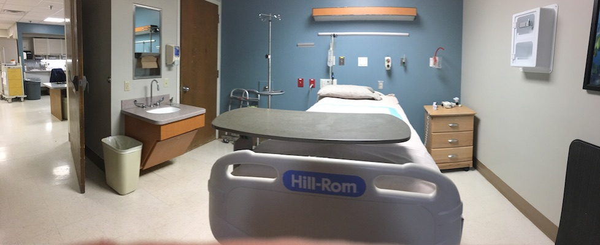
I regained consciousness around 5:00 PM and felt completely comfortable. No pain, no nausea, just very tired and sleepy. I assume they put a bunch of strong pain killers in me but I was feeling really good. It took a while before they figured out my hospital room but eventually, I was moved to my room at 7:00 PM.
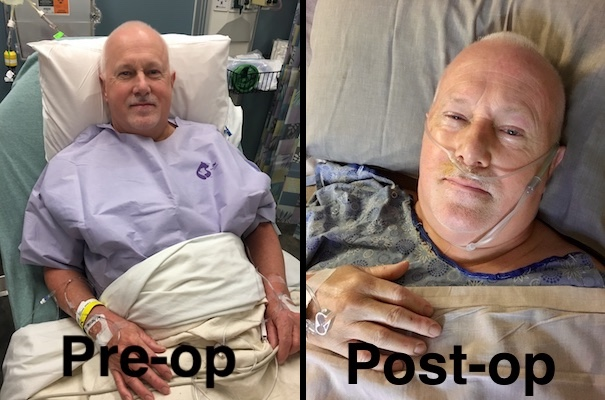
I don't remember much of that evening but seeing my darling wife who was waiting in my room made my day. Everybody has a guardian angel in their life and she is certainly mine.
The day after the surgery started pretty good. I was comfortable, the discomfort was limited and early indications were that I was on track for a speedy recovery. I was quickly moved from a water only to a liquid food diet and the visit by my wife and kids was great.
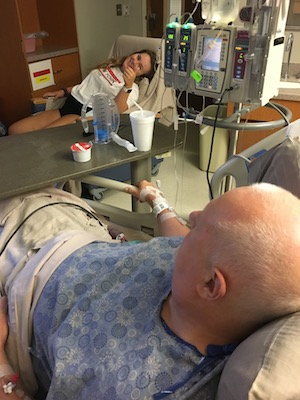
One of the "fun" parts was that I was hooked to a patient controlled morphine dispenser. Every time I felt discomfort, I could press a button and 30 seconds later I was in a very happy place. The whole thing was controlled by a computer that ensured I could not overdose. So for most of the day I was on a different planet.
That evening I had my second liquid meal and all of a sudden I started to get terrible nausea that lasted for days. The first reaction of the hospital was to treat the symptoms. If you are nauseated, you get anti nausea medication. That did not improve the situation and I believe it actually made it worse. They also decided to put me back on a water only diet.
For 48 hours I was miserable. Nobody knew what was going on and the hospital departments were blaming each other. Urology said it was a side effect of anesthetics, The anesthesiology group blamed the antibiotics and others blamed the magnesium supplements or the pain killers. What really frustrated me was that everybody had an answer for the symptoms but nobody wanted to look for the root cause.
The analyst in me got really upset and decided that I would do the root cause analysis myself by eliminating medications. First I stopped using the morphine and all other pain medications. I ended up with some discomfort but it was manageable. Secondly I refused medications that were treating side effects. In the end, I discovered that the culprit was the medication to restart my intestines.
During my surgery, a part of my intestines were used for the new urinary diversion. Apparently your intestinal system "falls asleep" after this kind of surgery and it needs something to kickstart it again. Once they changed that medication, the nausea went away and I ended three days of throwing up.
In the end I was on a water only diet for five days and lost eight pounds. With the new medication, my intestinal function started quickly and I was moved to real food. Recovery accelerated quickly and after a torturous six days, I was released and could start my recovery at home.
Coming home was fantastic. I was clearly weakened by the surgery and the starvation diet but I was euphoric to be done with it all. My first full day home I had some visitors and they were very impressed that I could move around and have a conversation for a while.
With perfect hindsight, it must have been the euphoria and adrenaline that got me through the first day since the following days were a lot harder and I slowly started to deteriorate. I became more tired and was constantly cold. I had little to no appetite and it was a struggle to focus on anything. Within a few days I was a TV watching zombie again that did not absorb anything and I assume I was a concern to my family.
Finally after a few days I decided to measure my temperature and it was climbing quickly. Eventually it hit 102 Fahrenheit and we called the urologist. As always, these things happen after hours but I got a callback quickly. The doctor on call happened to be the person who performed my first biopsy and he was very helpful. He recommended I go to the emergency room in the hospital where my surgery was performed and get some blood work done. The reason he recommended that hospital is that it's the only one in the area where all medical disciplines are in the building 24/7.
Well, the simple trip to the hospital to get some blood work done quickly changed to hospitalization. My white blood cell count was out of control indicating some massive infection. Not knowing what kind it was, they did a urine and blood culture to detect the type and loaded me up with a wide reaching palette of antibiotics.
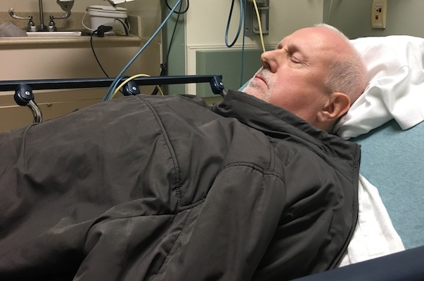
My body did not take these antibiotics very kindly and nausea/vomiting started almost immediately. My mental state went downhill quickly as the memories from the first hospitalization were still very fresh. It was frustrating, especially since the hospital did not have a room ready. I told my wife to go home (waiting was torture for her as well) and they finally transferred me from the emergency room to a hospital bed at 3:00 AM.
Given that they could not rule out the need for emergency surgery, I was once again put on a water only diet. Another flashback I could have done without.
On the second day they continued the hunt for the infection source and finally they found that I had a nasty bacterial infection in my intestines called Clostridium difficile or C. Diff for short. This is some really nasty stuff and I was put in isolation and on some very strong antibiotics. Isolation in this case meant that I could not leave my hospital room and everybody coming into my room had to wear a hazmat gown and gloves (including all visitors). Everything brought into the room had to stay there or be wiped off with chlorine after leaving the room.
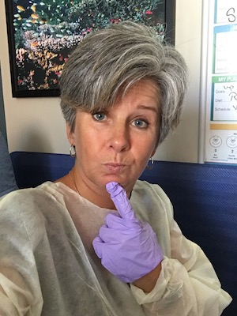
The cocktail of antibiotics did a real number on me as it completely destroyed all good bacteria and I was nauseated for a number of days. I hit a really deep low one night and I even got scared. Here I was sick to my stomach with a raging fever, high white blood cell count and feeling more miserable than at any other point during this journey. Was I going to be one of those statistics that did well during the original surgery but would later succumb to post-op complications? It was a lonely night and it took every ounce of remaining energy to talk some sense into myself. Clearly if things were as bad as I thought, I would be on an intensive care unit. Finally I calmed down and managed to get some sleep.
I again got upset with the medical staff as they were keeping me in the dark as to what the plan was. Did they even have one or did they think I was too stupid to understand? All of this happened on a weekend were hospitals operate in slow motion and the people on duty don't want to be there. The best example was the urologist on duty that weekend. If I had not chosen to go with the robotic assisted surgery, this doctor would have been my surgeon. Initially I was happy with him showing up as he had done the most cystectomies in the region. My opinion changed quickly however as he was arrogant, never listened to me and constantly interrupted me. He never answered my questions and it was clear he did not want to be there. At one point I thought he might even be vindictive as I did not pick him as my surgeon and went with a younger, less experienced team. For what it's worth, at least he confirmed I did the right thing. I could not imagine having him as my physician.
Luckily on Monday morning, the stars aligned as the urology resident on duty was the same lady who observed my surgery and was very helpful during my first hospital stay. My surgeon had also come back from a week of vacation and the two finally answered my questions and came up with a plan. To my great surprise they released me from the hospital that day as my vital signs and white blood cell count were back to normal. The "only" antibiotic I was taking was oral so I could continue that at home and my diarrhea was under control. The news made this grown man cry and I could see light at the end of the tunnel again. I did however lose another five pounds in the process.
So one last point on isolation. Despite all the precautions I mentioned before, the food delivery staff never suited up before coming into my room and even worse, I don't think they took any precautions with my tray (which I clearly touched) when they picked it up. And they are the people that literally go to every hospital bed. What a loophole. It was almost as comical as the housekeeping staff that did suit up but only cleaned around objects. My bed side table for instance would only be cleaned were open spaces were visible. Not a single object on the table was lifted in the cleaning process. What a joke. No wonder hospitals are bacterial exchange programs and I'm assuming I picked up my bacteria during my first hospital stay.
Most of us have seen a few rounds of antibiotics in our lives and I can not recall ever feeling an effect or suffering side effects. I was therefore completely shocked how much I suffered during the antibiotic treatment for this C. Diff infection.
Dry mouth, out of whack taste buds, metallic taste in my mouth, upset stomach, nausea, vomiting, lack of appetite, zero energy, fast weight loss and poor blood circulation in toes and fingers. It was terrible and I must say that the side effects of these antibiotics were worse than those of chemotherapy.
After I came home, I had to take the antibiotics for another eight days and it was a struggle. On two occasions just taking the pill would cause vomiting and in the end I lost another ten pounds. My total weight loss since the morning of surgery was 22 pounds (over a 3 week period). No wonder I'm feeling weak.
In contrast to the chemotherapy however, my body recovered quickly and three day after taking the last antibiotics, I could feel a turnaround. Weight loss had stopped and I had regained some appetite. My taste buds are not back to normal yet but hopefully that won't be too long.
I think I can honestly say that this bacterial infection and the antibiotic treatment were the hardest part of my journey so far. For it to come at a time that I thought I was climbing my way out of hell, it was soul destroying to be sent straight back.
Today I met with my surgeon to remove my stents and to hear the results of my biopsies. Stent removal was a non-event and the biopsy results were extremely positive.
All (dead) cancer cells were contained in the badder and the cancer had not spread into my prostate. Even better news was that the 21 lymph nodes removed during surgery were totally clean. Based on the CT scan, they already thought this but until they do a biopsy of the parts removed, they can't know for sure.
This was a major relief as my body is now cancer free after surgery even though nobody will say this. I can now start the real journey to recovery and one day call myself a cancer survivor.
I've seen the highway to hell, I've been on the highway through hell and I even made a U-turn back to hell. I'm now looking forward to continuing my journey on the highway out of hell and never return.
Today, I visited the oncologist who explained that my urologist was a little too optimistic. My biopsy had revealed that some cancer cells made it into the blood vessel bundles that were attached to the bladder although there was no evidence that they made it into the blood stream or any other part of my body. I now have to do a CT scan every three months for two years to ensure nothing pops up.
I ended up with a massive infection that required hospitalization. This time it was a kidney infection caused by a narrowing in my left ureter which caused my kidney to pool urine. My body responded quickly to the antibiotics and I recovered within a few days. Unfortunately, tests proved that my kidney function was not right and that this urethral stricture would have to be dealt with as it was likely to cause future infections.
My mother-in-law has been in poor health for the last couple of months and my wife and I had decided to go to the Netherlands in December to see her one more time. Given that I was a ticking time bomb for another infection, I agreed with my urologist that I would take antibiotics with me and postpone surgery to fix my ureter until after the trip.
By the time we got to the Netherlands, my mother-in-law had deteriorated so badly that she was now in a hospice. We decided to extend our trip for one week and she died in my wife’s arms during the night when she had the watch. We were able to attend the funeral and came back on Christmas Eve. My body behaved perfectly and we couldn’t have scripted this sad event any better. When there’s an ocean between you and your parents, it is hard with end-of-life events. Two of our parents died of catastrophic events (one a massive heart attach and the other of a stroke), one died of pancreatic cancer and the last of old age. We were very grateful that we could be there for at least one of them.
My regular oncology CT scan was clean so at least that news was good.
My luck ran out and I was once again hospitalized for a kidney infection. This time my fever was 104 with a heart rate of 160 at rest when I walked into the Emergency Room and I almost ended up on the cardiology department. Antibiotics worked well again but this time they also installed a nephrostomy tube to better drain my left kidney.
A nephrostomy tube is a catheter (a thin tube). It is put in through your skin and into your kidney to drain your urine. Typically you need a nephrostomy tube when something is blocking your normal flow of urine from your kidney. The bad part is that this tube empties into another bag so I ended up with two bags for a while.
Luckily, the radiologist that installed the nephrostomy tube saw my discomfort and smithed the regular nephrostomy to a retrograde nephrostomy. That type drains internally and basically because like a “stent” between the kidney and the bladder (in my case the ileal conduit). This allowed to bypass the stricture and lower the risk of infection.
My urologist went in to try and fix my ureter with a laser scarring and angioplasty-like balloon technique to open up my ureter. This procedure has a low chance of success but it is not invasive so we agreed it should be tried before more drastic surgery was pursued.
He was very nervous about what he found and I think he believed the narrowing of the ureter was caused by escaped cancer. Luckily, the biopsy revealed that this was not the case so it was “just” a chronic infection caused by that stricture.
At the same time, my retrograde nephrostomy was removed and replaced by a “wider” stent to keep the ureter open while the scared tissue healed. In the end, I had no pain and there was no noticeable side effects.
I had another UTI (luckily no hospitalization required this time) but the CT scan showed that the surgery to fix the stricture had not worked. They now have to go back in and cut the bad piece out. Step one will be another temporary nephrostomy tube and step two full be major surgery to fix the ureter.
The nephrostomy tube was the regular type with a tube sticking out of your back but they added the retrograde part so it would drain internally. This way I did not require a second bag but I had a tube with port sicking out of my back.
COVID-19 is really disrupting routine medical procedures. Luckily, emergency procedures and treatment for cancer patients are still allowed so I could do my regular CT body scan. It came back negative so fingers crossed, it looks like the cancer is gone (for now).
My Oncologist explained that I will keep doing these scans regularly for two years after which they are done annually. After two years, there is a 95% probability that the cancer will not return.
I now know that the ureteral stricture has to be removed and this will be major surgery. Unfortunately, due to COVID-19 restrictions, this procedure can’t be performed and I will have to wait until the government allows these procedures to be restarted.
My urologist tells me that once they start back up, I will be priority 2 out of 3 as the people who need cancer removal will have to go first. Based on current projections, it’s likely June before they start and my turn will not be before July.
So the only choice I have right now is to keep nephrostomy tubes to minimize the chance of infections. These tubes have to be replaces on a regular basis and even that is hard to schedule. Luckily my radiologist is very good at using the words emergency and life threatening so he was able to get me in for a replacement.
This was a remarkable experience since I never saw another patient at the hospital that day. Parking lot and all waiting rooms were completely empty so it all went very fast. I guess there are positive side effect to COVID-19. As this was outpatient, I’ve was back home on opioids in no time.
The exit wound of my nephrostomy tube started to look angry. After texting a picture to my urologist, he did not want this to develop into another infection so he contacted the radiologist to have the tube replaced. Yet again, they cleverly used terms like urgent and life threatening to convince the hospital to allow the procedure while under COVID-19 lockdown.
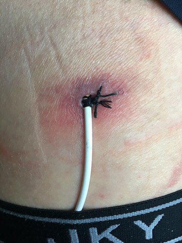
The procedure went well and it was over in 30 minutes. Again the hospital was a ghost town and I never saw another patient. The other good thing was that the radiologist installed a retrograde nephrostomy tube which is fully internal. No more exist wounds on my back as this tube (stent) has to stay there until I can finally schedule my surgery.
Today, I got the phone call from the urology group that it’s finally my turn to get scheduled for major surgery to fix my ureter by cutting out the bad part. Surgery is scheduled for August 12th and it will take 4 to 5 hours (ouch).
The same surgeons that performed the first surgery will conduct this one as well and again they’ll be assisted by the Da Vinci robot. I’m really looking forward to get this done and restart a normal life.
After an 18 month ordeal where I’ve tried a professional come back at least 5 times, I’ve come to the conclusion that it’s time for me to make some serious life changes and focus on the more important things.
Once you're away from a workplace for this long, many things happen and you start to feel like an outsider. Things you’ve created have been replaced, procedures have become more bureaucratic and most importantly, tribal alliances have morphed. For a while, I was ready to address the large number of issues I faced but eventually I came to the conclusion that I no longer had the energy to set it all straight again.
So i’ve decided to retire on December 31st after a 40 year career in a very complex international environment. By the time all my medical issues are solved, I’ve undergone a two year journey and I now want to focus on my family and myself.
Today it is finally time and they will hopefully fix my ureter once and for all. It will be a 4 to 5 hour surgery by two surgeons assisted by my friend Da Vinci, the robot.
It all went very well and they removed a small portion of my ureter (about 1 cm) and made a new connection to my ileal conduit. In the end, I only spent one night in the hospital as they don’t want patients there for too long due to COVID-19 fears. If your vital signs are good and they see no life threatening issues, you’re out of there.
Personally, I think I went home too soon and I had serious pain for 2 weeks. One of the robot entry wounds got infected but it luckily got under control quickly.
If you now look at my belly, I look like someone who survived a grenade blast. After two rounds of robot surgery and a number of nephrostomy tubes, I have 16 beautiful scares in a random pattern. I have decided that I’ll make up a number of war stories to tell people who ask questions.
My surgeon had send in the piece of ureter he removed for a pathological exam and luckily it showed no signs of cancer. This really good news but what caused that stricture?
In my mind, it is very likely that something went wrong during the healing process after the bladder removed surgery and it caused the stricture. When I was hospitalized for my C. Diff infection, 2 weeks after my bladder removal, there was a lot of blood in my urine for a few days and it’s likely something went wrong then and there. I will probably never know what the cause was which is OK with me (as long as it doesn’t come back).
The other good news is that an ultrasound of my left urinary tract showed that I now have normal flow and the new connection looks very good. Let’s hope this problem is now solved and I don’t have to deal with these infections anymore.
If you had asked my 5 years ago when I would retire, I would have answered: "when they force me to" which in my case would be June 2025. Now to be fair, if you have asked me at the same time if I could ever be a cancer patient, if would have told you that the probability was low given my family history. Heart decease on the other hand could be a bigger problem.
Well, things went differently and after a two year medical journey that included a one year battle with cancer and an unfortunate second year fighting infections, going back to work was not high on my list. Time had moved on and the teams and projects I was managing took turns different from what I thought was wise.
So today is my last day of employment and I'll start retirement tomorrow. I have to emit that I'm emotional about this as I've worked in an international environment with wonderful people for 40 years straight. I will not miss the inevitable bureaucracy but I will miss the people.
I did another routine CT scan with contrast fluid on December 30th. Today I got the results and everything is looking good. This is a great start to retirement. My next CT scan will be in May.
One thing I'm starting to work on now is physical strength. Two years of limited physical activity have taken their toll and I'm out of breath quickly. So now that I have time on my hands, I've started to go for a daily 3 mile walk which is enjoyable and even mentally therapeutic.
During my last visit to the Urologist and Oncologist, I asked both if my COVID-19 risk levels were elevated. Both of them told me "NO" as I have no active cancer and I'm not immunocompromised. So when the time came to register myself with the State of Virginia, I answered those questions honestly and I therefore did not yet qualify for the vaccine. I was simply going to have to wait my turn.
In the following months, this started to bug me as more and more people around me got vaccinated and most of them were very healthy. Marathon runners who smoked once in a while, people who had cancer a decade ago, people with slight overweight and so on. I started to feel frustrated about a poorly managed system where people could easily be "economical with the truth".
I therefore concluded that I had three problems: I was too young, too healthy and too honest. On top of that, the State of Virginia did not let you change your vaccine registration. Back to waiting my turn and hunker down in the process.
I was notified today that the State of Virginia had changed its vaccine eligibility rules and I was now able to go back and update my information. I ticked the cancer box that I left unmarked initially. I fully accepted the criteria laid out by my Urologist and Oncologist but on the other hand, neither of them will tell me I'm cancer free or that my cancer is in remission (I assume that is for legal reasons). We'll, if I had cancer and I'm not cancer free, I see no reason not to tick the cancer box especially since the State of Virginia has no description on what the single word (cancer) means in this context.
I also ticked the overweight box since it now had a link to a Body Mass Index (BMI) of 25. This box alone will make 80% of all Virginians qualify for the vaccine.
I was eventually able to schedule my vaccinations for March 23rd and April 13th. I had done a lot of research on the available vaccines and I was able to get the number one on my list: Pfizer-BioNTech.
Well, I overdid it again. In an attempt to quickly improve my physical strength, I went too far, too fast and I hurt my Peroneus Longus and Peroneus Brevis muscles in my lower right leg. Luckily, I did not cause too much damage and physical therapy alone will probably do the trick. The good news about this is that at least they'll teach me the right way to warm up before I do something crazy next time.
Two years ago I was undergoing chemotherapy and I attended my son's college graduation between rounds three and four. On one side, it was a victory dance as cancer couldn't stop my from attending and being proud. On the other side, the chemo had taken its toll and thoughts about mortality were dominating the days surrounding the graduation (you can about it above in the 18 May 2019 entry).
It's now two years later, I'm doing a lot better and I was able to attend my daughter's graduation. It felt great but I have to admit that I was overcome by emotion when her name was called. Two years ago, I wasn't sure if I would see this moment. Well, I did and I'm proud of my daughter who's struggled with Auditory Procession Disorder her entire life. Not only did she obtain her Bachelors of Science in Communications, she was also accepted into three graduate schools. That girl will be going places and I couldn't be more proud of her.
Copyright (c) 2019-2021 Johan A. Goossens. All rights reserved.
This work is licensed under the terms of the MIT license.